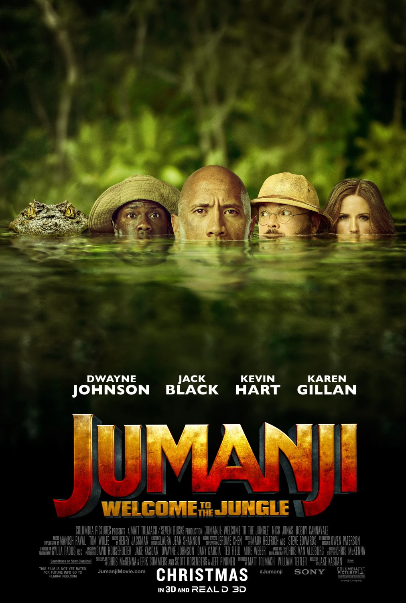

Diretor: Jake Kasdan
Com: The Rock, Karen Gilan
Gênero: Ação, aventura, comédia
Censura: 12
Tempo de duração: 119 min
Sinopse: Em uma nova aventura de Jumanji, quatro crianças do ensino médio descobrem um antigo console de videogame e são atraídos para o cenário de selva do jogo, literalmente se tornando os avatares adultos que escolheram. O que eles descobrem é que você não joga apenas Jumanji – você deve sobreviver. Para vencer o jogo e retornar ao mundo real, eles devem embarcar na aventura mais perigosa de suas vidas, descobrir o que Alan Parrish deixou há 20 anos e mudar a maneira como pensam sobre si mesmos - ou ficarão presos no jogo para sempre, para ser jogado por outros sem pausa.